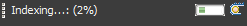
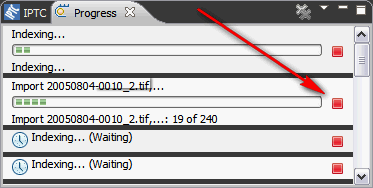

First cancel the Import Operation. To do so, double click on the progress indicator in the status line.

The Progress View opens. Click on the red Cancel button at the right side of the Import operation entry.

If you want to resume the operation, invoke the Import Operation again specifying the same folder or device. When asked what to do with already existing catalog entries, answer Skip all. Thus, only the remaining images are imported.